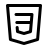
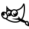
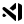

Sobre Mim
Olá! Me chamo Yasmin Gabrielle Lima Posse, uma garota que decidiu transformar linhas de código em beleza. Atualmente quero me tornar uma Front-End. Tenho 15 anos, sou apaixonada por design, tecnologia e todo universo que mistura estética com criatividade. Criei a Myntasy como minha dimensão pessoal — onde códigos florescem, ideias ganham forma e a beleza mora nos detalhes.
Atualmente, estou estudando HTML, CSS e design para web, construindo projetos que refletem a sua identidade e seus sonhos. Minha missão? Encantar quem visitar meu mundo digital e encantar todos com meu trbalho que faço com muito carinho e dedicação para que tudo saia da maneira que desejou com estilo e personalidade.
Habilidades
Sei desenvolver em HTML e CSS no basico, ainda vou aprender a programar em JavaScript e C++, tenho o compromisso de me especializar nessas areas.
Pode contar que e saiba falar inglês um pouco, fiz curso por 2 anos em uma escola propria para inglês, e faço na escola. Eu sei Matematíca mais do que básico, pretendo fazer faculdade de Ciencia da Compultação ou algo na area de TI.
Ferramentas que uso
HTML5- Hyper Text Markup Language.
CSS3- Cascading Style Sheets.
Gimp- Editor de foto.
Github- Meus projetos ficam lá, é tenho um repositório local no Github Pages.
VSCode- Visual Studio Code, onde programo e desenvolvo em HTML, CSS, JavaScript.